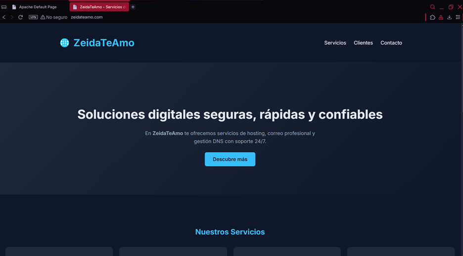
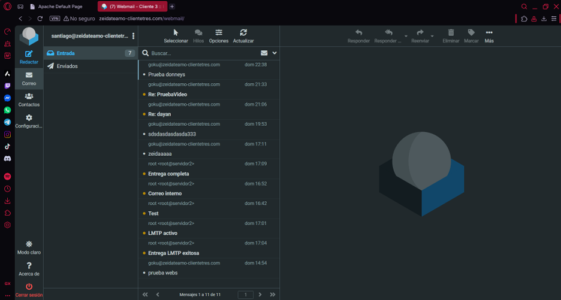
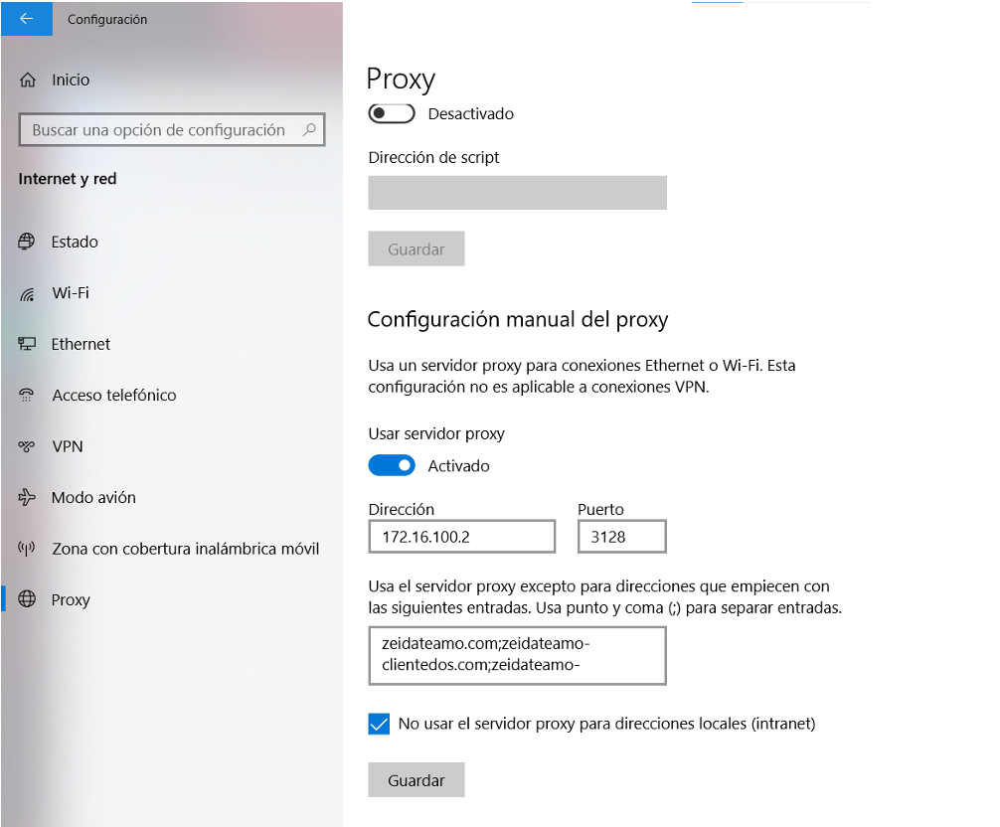

Infraestructura de red completa sobre dos servidores virtuales — DNS, hosting web, correo electrónico, proxy con bloqueo de redes sociales y firewall. Un parcial universitario convertido en broma, convertido en proyecto real.
El parcial pedía crear una empresa de hosting con un dominio propio. Tenía que elegir nombre. Mi profesora se llamaba Zeida. La respuesta fue obvia: ZeidaTeAmo.com.
Lo que empezó como un chiste se convirtió en uno de los proyectos técnicos más completos que he construido: dos máquinas virtuales Ubuntu 22.04 sobre VirtualBox con Vagrant, interconectadas en una red privada clase B, con servicios reales corriendo en producción. DNS autoritativo, sitio web en Apache, clientes en Nginx, proxy Squid con bloqueo de redes sociales, servidor de correo con Postfix y Dovecot, y firewall con UFW.
Configuré BIND9 en el Servidor 1 como servidor DNS autoritativo para tres zonas: zeidateamo.com, zeidateamo-clientedos.com y zeidateamo-clientetres.com. Cada zona tiene sus registros A, NS y MX correctamente definidos.
La clave del parcial era demostrar que acceder por IP muestra una página diferente (un "Hola Mundo") a la que aparece al usar el dominio. Eso se logró configurando un VirtualHost en Apache con ServerName zeidateamo.com, mientras la IP devuelve el default del servidor.
El DNS responde con status: NOERROR en todas las consultas con dig,
resuelve correctamente desde ambos servidores y apunta las IPs internas de la red privada.
Configuré Postfix como MTA (agente de transferencia de correo) y Dovecot como servidor IMAP/POP3, asociados al dominio zeidateamo-clientetres.com. El sistema usa Maildir para almacenar los correos de cada usuario.
Se crearon dos cuentas virtuales: santiago@zeidateamo-clientetres.com
y goku@zeidateamo-clientetres.com. Ambas cuentas pueden enviarse
correos entre sí, verificado a través del webmail integrado en el sitio del cliente.
La cola de Postfix funciona limpia (Mail queue is empty) y los buzones
Maildir muestran los correos recibidos correctamente. Todo accesible desde el sitio
web del Cliente 3 mediante un hipervínculo directo.

El Cliente 2 requería bloquear el acceso a redes sociales desde su red interna.
Configuré Squid en el Servidor 1 como proxy HTTP en el puerto 3128,
apuntando a la IP 172.16.100.2.
Las reglas del proxy bloquean dominios como facebook.com e instagram.com, mientras permiten el tráfico normal y el acceso a los sitios internos de la empresa. En el equipo cliente se configura el proxy manualmente con la IP y puerto, y se excluyen los dominios internos de la restricción proxy.
El resultado: intentar entrar a Facebook o Instagram desde la red del cliente muestra un error de acceso denegado, mientras las búsquedas normales y el sitio propio de ZeidaTeAmo funcionan sin problema.

Este video muestra el funcionamiento completo de la infraestructura: acceso por IP vs dominio, navegación entre los sitios de los clientes, zona privada con autenticación básica HTTP, la versión segura HTTPS del Cliente 2, el webmail del Cliente 3 y la confirmación de que el DNS resuelve correctamente todos los registros.
En este video se ve el proxy Squid funcionando en tiempo real: el navegador tiene configurado el proxy con la IP del Servidor 1 y el puerto 3128. Se intenta acceder a Facebook e Instagram y ambos quedan bloqueados. Luego se demuestra que las búsquedas normales y el sitio ZeidaTeAmo siguen funcionando perfectamente — el bloqueo es selectivo, no un corte total.
ZeidaTeAmo no es solo un parcial aprobado. Es la demostración de que puedo ir desde cero hasta producción: levantar máquinas, configurar servicios, resolver dominios, asegurar conexiones y bloquear accesos no autorizados.
— Santiago Londoño Mendez